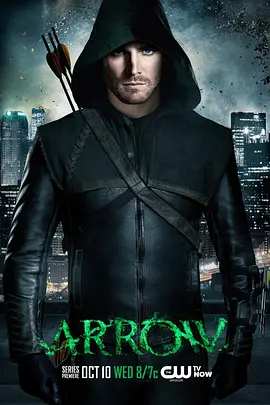

7.5
绿箭侠 第一季
Arrow Season 1
2012
美国
评分 7.5
导演:
大卫·努特尔 / 盖伊·诺曼·比 / 约翰·贝林
演员:
斯蒂芬·阿梅尔 / 凯蒂·卡西迪 / 科林·唐纳 / 大卫·莱姆希 / 薇拉·贺兰德
类型:
冒险,剧情,动作
剧情简介
豪华游艇沉没后的第五年，昔日的富家公子 Oliver Queen 被意外寻回，他带着深重的神秘与冷峻气质重新踏入城市。熟悉他的家人与朋友很快察觉到变化——曾经放纵轻狂的青年，如今举止克制，眼神中藏着不愿触碰的阴影。他在社交场合刻意维持微笑，却在转身的瞬间流露出与过去截然不同的沉静与坚硬。夜晚的城市灯光从高楼间切割而过，Oliver 穿梭在暗巷与天台之间，动作利落而无声。他以精确的箭术和强悍的身手打击罪犯，每一次出手都像是在偿还无形的债。白天，他是社交宴会中人人注目的继承人；夜晚，他以“绿箭”的身份追查腐败的根源，试图弥补父亲留下的烂账。与此同时，警探 Quentin Lance 对这位蒙面义警保持着强烈戒备，他追踪线索、调度警力，只为将这名游离于法律之外的人绳之以法。Oliver 的情感关系也愈发复杂：与前女友 Laurel 隐隐的情愫未断，好友 Tommy 的敏感试探让他步步为难，而妹妹 Thea 的叛逆与迷失则不断牵动他的责任与愧意。在城市的阴影深处，一股更大的力量悄然运作，每一步都似乎与他有着无法切断的牵连。Oliver 在追逐真相的过程中，也逐渐意识到自己必须面对的不只是街头的罪恶，还有埋藏在过去、足以改变一切的秘密。